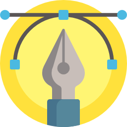

Chen, YI-XI
System Engineer/Web Front-End
chen.ishi@gmail.com
Skill Set
Web Technique
NCKU Expired Food Project

Graphic Design
Wu talk! Tainan Local Magazine
Machine Learning
Restaurant Recommandation /
Improving Image Quality Using GAN

Maker Skills
Mongolia Computer Science Volunteer /
TNFSH Arduino Teaching Assist